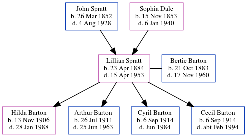

Lillian Barton (née Spratt) 1884 - 1953
[ Home ] | [ Calendar ] | [ Surnames Index ] | [ Errors ] | [ Family History ]A domestic general servant and the child of John Spratt (an agricultural labourer) and Sophia Dale, Lillian Spratt, the great-aunt of Nigel Horne, was born in St Nicholas-at-Wade, Kent, England on 23 Apr 18841,2,3,4,5,6,7, was baptised there on 6 Jul 1884 and married Bertie Barton (a builder & public work's contractor with whom she had 4 children: Hilda May, Arthur George, Cyril Henry and Cecil John) in Thanet, Kent, England on 23 Dec 19058.
During her life, she was living at Shuart Cottage, Podden Street in St Nicholas-at-Wade on 5 Apr 18911; at Rising Sun, 103 Reculver Road, Beltinge, Kent on 31 Mar 190110; at Phyllis Bungalow, Osborne Gardens, Reculver, Kent on 2 Apr 19119; and at Three Ways, Reculver Road, Herne Bay, Kent on 29 Sept 19394.
She died on 15 Apr 1953 in Bridge, Kent, England6.
Parents
- John was born on 26 Mar 1852
- Sophia was born on 15 Nov 1853
Children
- Hilda May was born on 13 Nov 1906
- Arthur George was born on 26 Jul 1911
- Cyril Henry was born on 6 Sept 1914
- Cecil John was born on 6 Sept 1914
Citations
- 1891 England Census Online publication - Provo, UT, USA: The Generations Network, Inc., 2005.Original data - Census Returns of England and Wales, 1891. Kew, Surrey, England: The National Archives of the UK (TNA): Public Record Office (PRO), 1891. Data imaged from The National
- 1901 England Census Online publication - Provo, UT, USA: The Generations Network, Inc., 2005.Original data - Census Returns of England and Wales, 1901. Kew, Surrey, England: The National Archives of the UK (TNA): Public Record Office (PRO), 1901. Data imaged from the National
- 1911 England Census Online publication - Provo, UT, USA: Ancestry.com Operations, Inc., 2011.Original data - Census Returns of England and Wales, 1911. Kew, Surrey, England: The National Archives of the UK (TNA), 1911. Data imaged from the National Archives, London, England.
- 1939 Register - Findmypast (was the wife of the head of the household)
- England & Wales births 1837-2006 - Findmypast
- England & Wales deaths 1837-2007 - Findmypast
- England & Wales, FreeBMD Birth Index, 1837-1915 Online publication - Provo, UT, USA: The Generations Network, Inc., 2006.Original data - General Register Office. England and Wales Civil Registration Indexes. London, England: General Register Office. © Crown copyright. Published by permission of the Cont
- England & Wales marriages 1837-2008 - Findmypast
- 1911 Census for England & Wales - Findmypast (was age 26 and the wife of the head of the household)
- 1901 England, Wales & Scotland Census - Findmypast (was age 16 and a niece in the household)
Media
Herne Bay Press - 17 Feb 1961

1939 Register Transcription - TNA-R39-1741-1741D-003-22
1911 Census for England & Wales - GBC/1911/RG14/04360/0035/2
Kent, Canterbury Archdeaconry banns 1754-1928 - GBPRS/CANT/M/94045620/2
England & Wales marriages 1837-2008 - BMD/M/1905/4/AZ/000363/217
England & Wales births 1837-2006 - BMD/B/1884/2/AZ/000552/275
1901 England, Wales & Scotland Census - GBC-1901-0006243968
1901 England, Wales & Scotland Census Transcription - GBC-1901-0006243970
Kent Baptisms - GBPRS/CANT/B/96802229
England Births & Baptisms 1538-1975 - R_884661231
England & Wales deaths 1837-2007 - BMD/D/1953/2/AZ/000057/067
1939 Register - TNA/R39/1741/1741D/003/23
Family Tree
Map
Generated by ged2site. Last updated on Jul 3, 2024